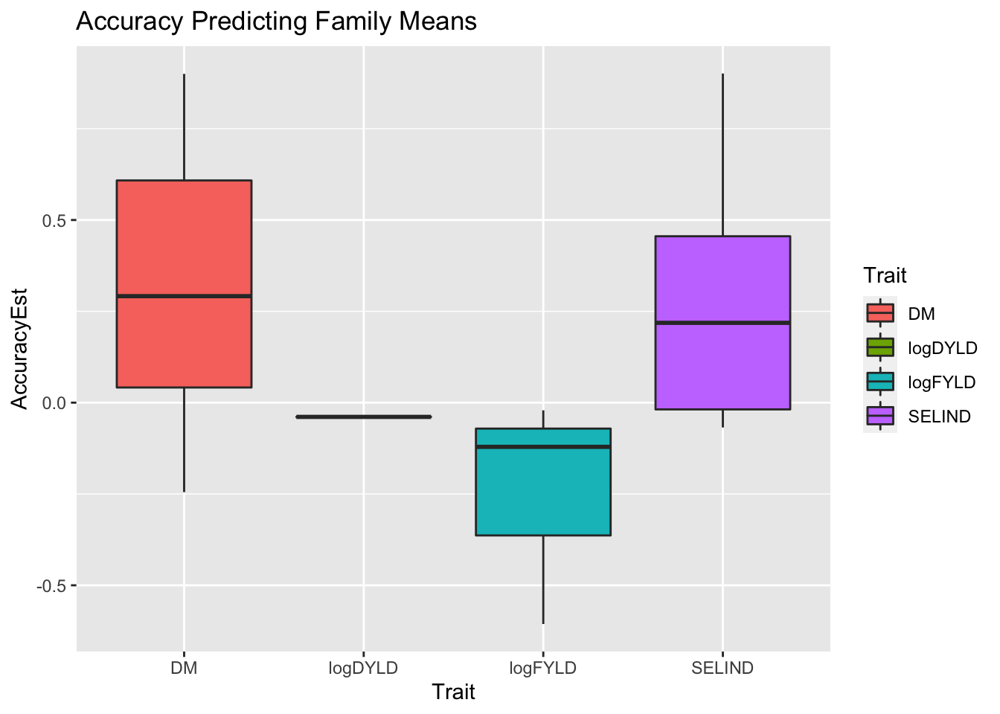
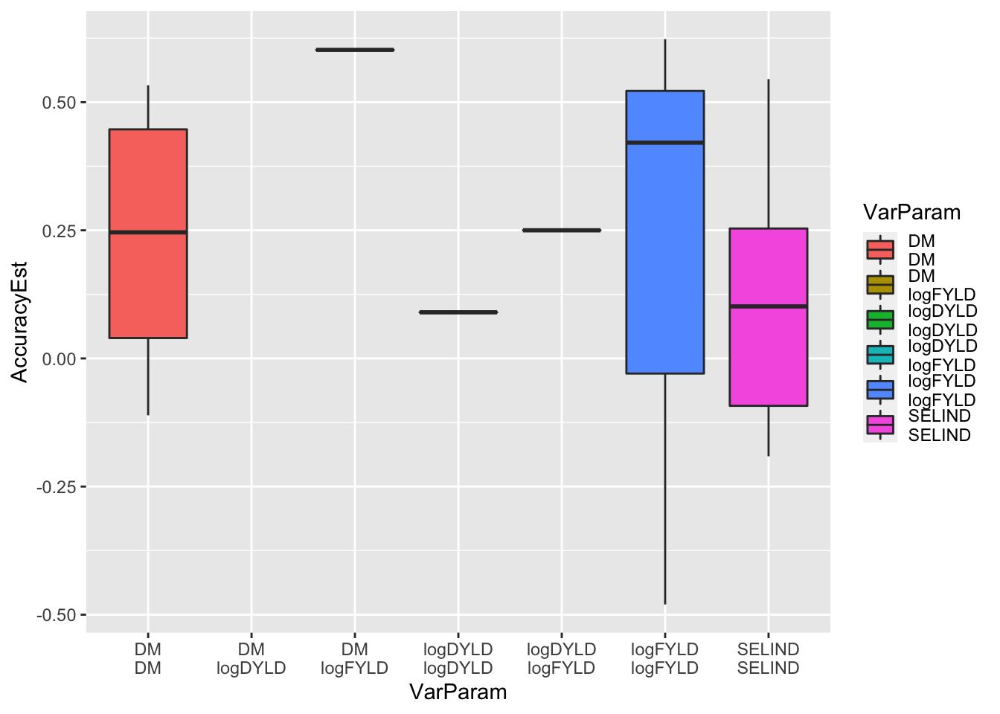

Last updated: 2022-05-09
Checks: 7 0
Knit directory: GSexample2022/
This reproducible R Markdown analysis was created with workflowr (version 1.7.0). The Checks tab describes the reproducibility checks that were applied when the results were created. The Past versions tab lists the development history.
Great! Since the R Markdown file has been committed to the Git repository, you know the exact version of the code that produced these results.
Great job! The global environment was empty. Objects defined in the global environment can affect the analysis in your R Markdown file in unknown ways. For reproduciblity it’s best to always run the code in an empty environment.
The command set.seed(20220320) was run prior to running the code in the R Markdown file. Setting a seed ensures that any results that rely on randomness, e.g. subsampling or permutations, are reproducible.
Great job! Recording the operating system, R version, and package versions is critical for reproducibility.
Nice! There were no cached chunks for this analysis, so you can be confident that you successfully produced the results during this run.
Great job! Using relative paths to the files within your workflowr project makes it easier to run your code on other machines.
Great! You are using Git for version control. Tracking code development and connecting the code version to the results is critical for reproducibility.
The results in this page were generated with repository version bb2d981. See the Past versions tab to see a history of the changes made to the R Markdown and HTML files.
Note that you need to be careful to ensure that all relevant files for the analysis have been committed to Git prior to generating the results (you can use wflow_publish or wflow_git_commit). workflowr only checks the R Markdown file, but you know if there are other scripts or data files that it depends on. Below is the status of the Git repository when the results were generated:
Ignored files:
Ignored: .Rhistory
Ignored: .Rproj.user/
Untracked files:
Untracked: .DS_Store
Untracked: Icon
Untracked: analysis/.DS_Store
Untracked: analysis/BreedBaseGenotypes_subset.log
Untracked: analysis/Icon
Untracked: analysis/images/Icon
Untracked: analysis/images/paste-2F34C15B.png
Untracked: analysis/images/paste-AD7AEEAC.png
Untracked: analysis/images/paste-CB5D91AC.png
Untracked: analysis/troubleshooting.Rmd
Untracked: code/Icon
Untracked: data/.DS_Store
Untracked: data/BreedBaseGenotypesDownload.positions
Untracked: data/BreedBaseGenotypesDownload.vcf
Untracked: data/BreedBaseGenotypes_subset.bed
Untracked: data/BreedBaseGenotypes_subset.bim
Untracked: data/BreedBaseGenotypes_subset.fam
Untracked: data/BreedBaseGenotypes_subset.hap.gz
Untracked: data/BreedBaseGenotypes_subset.log
Untracked: data/BreedBaseGenotypes_subset.nosex
Untracked: data/BreedBaseGenotypes_subset.positions
Untracked: data/BreedBaseGenotypes_subset.samples
Untracked: data/Icon
Untracked: data/metadata_cynthia.csv
Untracked: data/phenotype_cynthia.csv
Untracked: data/subset_unique_names_for_vcf.txt
Untracked: data/unique_names_for_vcf.txt
Untracked: data/vcf_colnames.txt
Untracked: out.log
Untracked: output/.DS_Store
Untracked: output/BreedBaseGenotypes_subset.genome
Untracked: output/BreedBaseGenotypes_subset.log
Untracked: output/BreedBaseGenotypes_subset.nosex
Untracked: output/Icon
Untracked: output/genomicPredictions.rds
Untracked: output/models_compared.Rdata
Untracked: output/parentWiseCV.rds
Untracked: output/standardCV.rds
Untracked: output/verified_ped.rds
Note that any generated files, e.g. HTML, png, CSS, etc., are not included in this status report because it is ok for generated content to have uncommitted changes.
These are the previous versions of the repository in which changes were made to the R Markdown (analysis/parentwise_cv.Rmd) and HTML (docs/parentwise_cv.html) files. If you’ve configured a remote Git repository (see ?wflow_git_remote), click on the hyperlinks in the table below to view the files as they were in that past version.
| File | Version | Author | Date | Message |
|---|---|---|---|---|
| Rmd | bb2d981 | wolfemd | 2022-05-09 | Add the final two sections - parent-wise cross-validation plus predicting crosses |
suppressMessages(library(tidyverse));
suppressMessages(library(genomicMateSelectR)); Read pedigree
ped<-read_delim(here::here("data","pedigree.txt"),delim = "\t")Rows: 1007 Columns: 4── Column specification ────────────────────────────────────────────────────────
Delimiter: "\t"
chr (4): Accession, Female_Parent, Male_Parent, Cross_Type
ℹ Use `spec()` to retrieve the full column specification for this data.
ℹ Specify the column types or set `show_col_types = FALSE` to quiet this message.Filter: Keep only complete pedigree records.
ped %<>%
dplyr::select(-Cross_Type) %>%
filter(!is.na(Female_Parent),
!is.na(Male_Parent),
Female_Parent!="?",
Male_Parent!="?") %>%
distinctped %>% distinct(Female_Parent,Male_Parent) %>% nrow()[1] 478Summarize the pedigree
ped %>%
count(Female_Parent,Male_Parent) %>%
arrange(desc(n)) %>%
summary(.$n) Female_Parent Male_Parent n
Length:478 Length:478 Min. :1.000
Class :character Class :character 1st Qu.:1.000
Mode :character Mode :character Median :1.000
Mean :1.289
3rd Qu.:1.000
Max. :7.000 Fully genotyped trios?
dosages<-readRDS(here::here("data","dosages.rds"))
genotyped_gids<-rownames(dosages)Are all of the entrees themselves genotyped?
all(ped$Accession %in% genotyped_gids)[1] TRUEtable(ped$Female_Parent %in% genotyped_gids)
FALSE TRUE
364 252 table(ped$Male_Parent %in% genotyped_gids)
FALSE TRUE
337 279 genotyped_ped<-ped %>%
filter(Accession %in% genotyped_gids,
Female_Parent %in% genotyped_gids,
Male_Parent %in% genotyped_gids)
genotyped_ped %>% nrow()[1] 155genotyped_ped %>%
count(Female_Parent,Male_Parent) %>%
arrange(desc(n)) %>%
summary(.$n) Female_Parent Male_Parent n
Length:117 Length:117 Min. :1.000
Class :character Class :character 1st Qu.:1.000
Mode :character Mode :character Median :1.000
Mean :1.325
3rd Qu.:1.000
Max. :7.000 How many families have >1 offspring?
genotyped_ped %>%
count(Female_Parent,Male_Parent) %>%
filter(n>1)# A tibble: 21 × 3
Female_Parent Male_Parent n
<chr> <chr> <int>
1 IITA-TMS-IBA011371 IITA-TMS-IBA011371 4
2 IITA-TMS-IBA020431 IITA-TMS-IBA030055A 2
3 IITA-TMS-IBA030060 IITA-TMS-IBA010903 2
4 IITA-TMS-IBA030060 IITA-TMS-IBA930265 2
5 IITA-TMS-IBA030060 IITA-TMS-MM970043 3
6 IITA-TMS-IBA30555 TMEB1 2
7 IITA-TMS-IBA4(2)1425 TMEB1 3
8 IITA-TMS-IBA8902195 IITA-TMS-IBA950379 2
9 IITA-TMS-IBA9001554 IITA-TMS-IBA011659 2
10 IITA-TMS-IBA91934 TMEB1 7
# … with 11 more rowsMy approach uses the --genome IBD calculator in the command-line program PLINK v1.9
Go over steps in manual: https://wolfemd.github.io/GenomicSelectionManual/parentwise_cross_val.html#verify-pedigree-relationships
In the terminal (not R) change directory
Go to the data/ directory where the VCF file is located
plink --vcf BreedBaseGenotypes_subset.vcf.gz \
--make-bed --const-fid --keep-allele-order \
--out BreedBaseGenotypes_subsetstill in the terminal
plink --bfile BreedBaseGenotypes_subset \
--genome \
--out ../output/BreedBaseGenotypes_subset;Back in R
genome<-read.table(here::here("output/","BreedBaseGenotypes_subset.genome"),
stringsAsFactors = F,header = T) %>%
as_tibble
genome %>% head# A tibble: 6 × 14
FID1 IID1 FID2 IID2 RT EZ Z0 Z1 Z2 PI_HAT PHE DST
<int> <chr> <int> <chr> <chr> <int> <dbl> <dbl> <dbl> <dbl> <int> <dbl>
1 0 IITA-T… 0 IITA-T… OT 0 0.616 0.384 0 0.192 -1 0.727
2 0 IITA-T… 0 IITA-T… OT 0 0.663 0.337 0 0.168 -1 0.694
3 0 IITA-T… 0 IITA-T… OT 0 0.529 0.471 0 0.236 -1 0.769
4 0 IITA-T… 0 IITA-T… OT 0 0.607 0.283 0.110 0.252 -1 0.798
5 0 IITA-T… 0 IITA-T… OT 0 0.586 0.408 0.0054 0.210 -1 0.784
6 0 IITA-T… 0 IITA-T… OT 0 0 0.0613 0.939 0.969 -1 0.990
# … with 2 more variables: PPC <dbl>, RATIO <dbl>dim(genome)[1] 506521 14ped %>%
semi_join(genome %>% rename(Accession=IID1,Female_Parent=IID2)) %>%
left_join(genome %>% rename(Accession=IID1,Female_Parent=IID2))Joining, by = c("Accession", "Female_Parent")
Joining, by = c("Accession", "Female_Parent")# A tibble: 4 × 15
Accession Female_Parent Male_Parent FID1 FID2 RT EZ Z0 Z1
<chr> <chr> <chr> <int> <int> <chr> <int> <dbl> <dbl>
1 IITA-TMS-BA… TMEB1 IITA-TMS-IBA… 0 0 OT 0 0.0248 0.927
2 IITA-TMS-IB… IITA-TMS-IBA9… IITA-TMS-IBA… 0 0 OT 0 0.685 0.315
3 IITA-TMS-IB… TMEB1 IITA-TMS-IBA… 0 0 OT 0 0.854 0.116
4 IITA-TMS-IB… IITA-TMS-IBA9… IITA-TMS-IBA… 0 0 OT 0 0 1
# … with 6 more variables: Z2 <dbl>, PI_HAT <dbl>, PHE <int>, DST <dbl>,
# PPC <dbl>, RATIO <dbl># Confirm Female_Parent - Offspring Relationship
## In the plink genome file
## IID1 or IID2 could be the Accession or the Female_Parent
conf_female_ped<-genotyped_ped %>%
inner_join(genome %>%
rename(Accession=IID1,Female_Parent=IID2)) %>%
bind_rows(genotyped_ped %>%
inner_join(genome %>%
rename(Accession=IID2,
Female_Parent=IID1))) %>%
# Declare confirm-reject Accession-Female_Parent
mutate(ConfirmFemaleParent=case_when(Z0<0.32 & Z1>0.67~"Confirm",
# Relatedness coeff differ if the Accession is the result of a self-cross
Male_Parent==Female_Parent & PI_HAT>0.6 & Z0<0.3 & Z2>0.32~"Confirm",
TRUE~"Reject")) %>%
dplyr::select(Accession,Female_Parent,ConfirmFemaleParent)Joining, by = c("Accession", "Female_Parent")
Joining, by = c("Accession", "Female_Parent")## Now do the same for the Accession-Male_Parent relationships
conf_male_ped<-genotyped_ped %>%
inner_join(genome %>%
rename(Accession=IID1,Male_Parent=IID2)) %>%
bind_rows(genotyped_ped %>%
inner_join(genome %>%
rename(Accession=IID2,Male_Parent=IID1))) %>%
# Declare confirm-reject Accession-Female_Parent
mutate(ConfirmMaleParent=case_when(Z0<0.32 & Z1>0.67~"Confirm",
# Relatedness coeff differ if the Accession is the result of a self-cross
Male_Parent==Female_Parent & PI_HAT>0.6 & Z0<0.3 & Z2>0.32~"Confirm",
TRUE~"Reject")) %>%
dplyr::select(Accession,Male_Parent,ConfirmMaleParent)Joining, by = c("Accession", "Male_Parent")
Joining, by = c("Accession", "Male_Parent")# Now join the confirmed female and male relationships
# This regenerates the original "genotyped_ped" with two added columns
confirmed_ped<-conf_female_ped %>%
left_join(conf_male_ped) %>%
relocate(Male_Parent,.before = "ConfirmFemaleParent")Joining, by = "Accession"So, how well supported are the pedigree relationships according to my approach?
confirmed_ped %>%
count(ConfirmFemaleParent,ConfirmMaleParent) %>%
mutate(Prop=round(n/sum(n),2))# A tibble: 4 × 4
ConfirmFemaleParent ConfirmMaleParent n Prop
<chr> <chr> <int> <dbl>
1 Confirm Confirm 118 0.76
2 Confirm Reject 11 0.07
3 Reject Confirm 8 0.05
4 Reject Reject 18 0.12Remove any without both parents confirmed.
valid_ped<-confirmed_ped %>%
filter(ConfirmFemaleParent=="Confirm",
ConfirmMaleParent=="Confirm") %>%
dplyr::select(-contains("Confirm"))valid_ped %>% nrow()[1] 118valid_ped %>%
count(Female_Parent,Male_Parent) %>%
filter(n>1)# A tibble: 19 × 3
Female_Parent Male_Parent n
<chr> <chr> <int>
1 IITA-TMS-IBA011371 IITA-TMS-IBA011371 4
2 IITA-TMS-IBA020431 IITA-TMS-IBA030055A 2
3 IITA-TMS-IBA030060 IITA-TMS-IBA010903 2
4 IITA-TMS-IBA030060 IITA-TMS-IBA930265 2
5 IITA-TMS-IBA030060 IITA-TMS-MM970043 3
6 IITA-TMS-IBA4(2)1425 TMEB1 2
7 IITA-TMS-IBA8902195 IITA-TMS-IBA950379 2
8 IITA-TMS-IBA9001554 IITA-TMS-IBA011659 2
9 IITA-TMS-IBA91934 TMEB1 6
10 IITA-TMS-IBA940561 IITA-TMS-IBA940263 2
11 IITA-TMS-IBA950971 IITA-TMS-IBA940561 3
12 IITA-TMS-IBA961089A IITA-TMS-IBA961089A 2
13 IITA-TMS-IBA961632 IITA-TMS-IBA000070 2
14 IITA-TMS-IBA961632 IITA-TMS-IBA030055A 3
15 IITA-TMS-IBA972205 TMEB1937 5
16 IITA-TMS-ZAR930151 IITA-TMS-MM970043 2
17 TMS13F1307P0004 TMS13F1343P0044 2
18 TMS14F1016P0006 TMS14F1035P0004 2
19 TMS14F1255P0005 TMS13F1343P0044 2valid_ped %>%
count(Female_Parent,Male_Parent) %>%
filter(n>2)# A tibble: 6 × 3
Female_Parent Male_Parent n
<chr> <chr> <int>
1 IITA-TMS-IBA011371 IITA-TMS-IBA011371 4
2 IITA-TMS-IBA030060 IITA-TMS-MM970043 3
3 IITA-TMS-IBA91934 TMEB1 6
4 IITA-TMS-IBA950971 IITA-TMS-IBA940561 3
5 IITA-TMS-IBA961632 IITA-TMS-IBA030055A 3
6 IITA-TMS-IBA972205 TMEB1937 5saveRDS(valid_ped,here::here("output","verified_ped.rds"))# Load verified ped
ped<-readRDS(here::here("output","verified_ped.rds")) %>%
# Rename things to match genomicMateSelectR::runParentWiseCrossVal()
rename(GID=Accession,
sireID=Male_Parent,
damID=Female_Parent)
# Keep only families with _at least_ 2 offspring
ped %<>%
semi_join(ped %>% count(sireID,damID) %>% filter(n>1) %>% ungroup())Joining, by = c("damID", "sireID")# GENOMIC RELATIONSHIP MATRIX
grms<-list(A=readRDS(file=here::here("output","kinship_add.rds")))
# BLUPs
blups<-readRDS(here::here("output","blups.rds")) %>%
# based on cross-validation, decided to exclude MCMDS from this analysis
filter(Trait != "MCMDS") %>%
# need to rename the "blups" list to comply with the runCrossVal function
rename(TrainingData=blups) %>%
dplyr::select(Trait,TrainingData) %>%
# need also to remove phenotyped-but-not-genotyped lines
mutate(TrainingData=map(TrainingData,
~filter(.,germplasmName %in% rownames(grms$A)) %>%
# rename the germplasmName column to GID
rename(GID=germplasmName))) %>%
# It seems actually that runParentWiseCrossVal() wnats this column named "blups"
rename(blups=TrainingData)
# DOSAGE MATRIX
## Dosages are also needed inside the runParentWiseCrossVal() function
## Reason is that they are used to extra SNP effects from GBLUP models
dosages<-readRDS(here::here("data","dosages.rds"))
# HAPLOTYPE MATRIX
## keep only haplos for parents-in-the-pedigree
## those which will be used in prediction, saves memory
haploMat<-readRDS(file=here::here("data","haplotypes.rds"))
parents<-union(ped$sireID,ped$damID)
parenthaps<-sort(c(paste0(parents,"_HapA"),
paste0(parents,"_HapB")))
haploMat<-haploMat[parenthaps,]
# SELECTION INDEX
SIwts<-c(DM=15,
logFYLD=20,
logDYLD=20)# RECOMBINATION FREQUENCY MATRIX
recombFreqMat<-readRDS(file=here::here("output","recombFreqMat_1minus2c.rds"))starttime<-proc.time()[3]
parentWiseCV<-runParentWiseCrossVal(nrepeats=2,nfolds=5,seed=121212,
modelType="A",
ncores=10,
ped=ped,
blups=blups,
dosages=dosages,
haploMat=haploMat,
grms=grms,
recombFreqMat = recombFreqMat,
selInd = TRUE, SIwts = SIwts)Loading required package: rsample[1] "Set-up parent-wise cross-validation folds"
[1] "Fitting models to get marker effects"Joining, by = "Trait"Loading required package: furrrLoading required package: futureiteration LogLik wall cpu(sec) restrained
1 -3.71141 20:22:44 0 0
2 -3.70229 20:22:44 0 0
3 -3.69222 20:22:44 0 0
4 -3.68241 20:22:44 0 0
5 -3.67488 20:22:44 0 0
6 -3.66862 20:22:44 0 0
7 -3.66307 20:22:44 0 0
8 -3.65783 20:22:44 0 0
9 -3.65261 20:22:44 0 1
10 -3.64828 20:22:44 0 1
11 -3.64828 20:22:44 0 1
iteration LogLik wall cpu(sec) restrained
1 -2.24966 20:22:59 0 0
2 -2.20818 20:22:59 0 0
3 -2.14978 20:22:59 0 1
4 -2.13835 20:22:59 0 1
5 -2.13835 20:22:59 0 1
iteration LogLik wall cpu(sec) restrained
1 -1.80555 20:23:20 0 0
2 -1.78463 20:23:20 0 0
3 -1.76522 20:23:20 0 0
4 -1.75075 20:23:20 0 1
5 -1.74321 20:23:20 0 1
6 -1.74321 20:23:20 0 1
iteration LogLik wall cpu(sec) restrained
1 -17.426 20:23:41 0 0
2 -17.4165 20:23:41 0 0
3 -17.412 20:23:41 0 0
4 -17.411 20:23:41 0 0
5 -17.4109 20:23:41 0 0
iteration LogLik wall cpu(sec) restrained
1 -5.39846 20:24:1 0 0
2 -5.18186 20:24:1 0 1
3 -5.07868 20:24:1 0 1
4 -5.07868 20:24:1 0 1
iteration LogLik wall cpu(sec) restrained
1 -4.16748 20:24:20 0 0
2 -4.13967 20:24:20 0 0
3 -4.12459 20:24:20 0 0
4 -4.11824 20:24:20 0 0
5 -4.11624 20:24:20 0 0
6 -4.11548 20:24:20 0 0Loading required package: sommerLoading required package: Matrix
Attaching package: ‘Matrix’The following objects are masked from ‘package:tidyr’:
expand, pack, unpackLoading required package: MASS
Attaching package: ‘MASS’The following object is masked from ‘package:dplyr’:
selectLoading required package: latticeLoading required package: crayonLoading required package: sommerLoading required package: MASS
Attaching package: ‘MASS’The following object is masked from ‘package:dplyr’:
selectLoading required package: sommerLoading required package: MASS
Attaching package: ‘MASS’The following object is masked from ‘package:dplyr’:
selectLoading required package: sommerLoading required package: MASS
Attaching package: ‘MASS’The following object is masked from ‘package:dplyr’:
selectLoading required package: sommerLoading required package: MASS
Attaching package: ‘MASS’The following object is masked from ‘package:dplyr’:
selectLoading required package: sommerLoading required package: MASS
Attaching package: ‘MASS’The following object is masked from ‘package:dplyr’:
selectiteration LogLik wall cpu(sec) restrained
1 -2.43093 20:22:45 0 0
2 -2.26507 20:22:45 0 0
3 -2.19404 20:22:45 0 1
4 -2.18724 20:22:45 0 1
5 -2.18724 20:22:45 0 1
iteration LogLik wall cpu(sec) restrained
1 -3.34368 20:23:1 0 0
2 -3.32559 20:23:1 0 0
3 -3.31357 20:23:1 0 0
4 -3.3066 20:23:1 0 0
5 -3.30323 20:23:1 0 0
6 -3.30125 20:23:1 0 0
7 -3.29994 20:23:1 0 0
8 -3.29899 20:23:1 0 0
iteration LogLik wall cpu(sec) restrained
1 -1.97673 20:23:22 0 0
2 -1.96142 20:23:22 0 0
3 -1.95634 20:23:22 0 0
4 -1.95547 20:23:22 0 0
iteration LogLik wall cpu(sec) restrained
1 -19.4408 20:23:43 0 0
2 -19.151 20:23:43 0 0
3 -18.9227 20:23:43 0 0
4 -18.7834 20:23:43 0 0
5 -18.7251 20:23:43 0 0
6 -18.7001 20:23:43 0 0
7 -18.6894 20:23:43 0 0
8 -18.6848 20:23:43 0 0
9 -18.6828 20:23:43 0 0
10 -18.682 20:23:43 0 0
iteration LogLik wall cpu(sec) restrained
1 -3.98576 20:24:3 0 0
2 -3.9837 20:24:3 0 0
3 -3.98346 20:24:3 0 0
4 -3.98346 20:24:3 0 0
iteration LogLik wall cpu(sec) restrained
1 -3.57202 20:24:21 0 0
2 -3.5048 20:24:21 0 0
3 -3.49365 20:24:21 0 0
4 -3.49345 20:24:21 0 0Loading required package: sommerLoading required package: Matrix
Attaching package: ‘Matrix’The following objects are masked from ‘package:tidyr’:
expand, pack, unpackLoading required package: MASS
Attaching package: ‘MASS’The following object is masked from ‘package:dplyr’:
selectLoading required package: latticeLoading required package: crayonLoading required package: sommerLoading required package: MASS
Attaching package: ‘MASS’The following object is masked from ‘package:dplyr’:
selectLoading required package: sommerLoading required package: MASS
Attaching package: ‘MASS’The following object is masked from ‘package:dplyr’:
selectLoading required package: sommerLoading required package: MASS
Attaching package: ‘MASS’The following object is masked from ‘package:dplyr’:
selectLoading required package: sommerLoading required package: MASS
Attaching package: ‘MASS’The following object is masked from ‘package:dplyr’:
selectLoading required package: sommerLoading required package: MASS
Attaching package: ‘MASS’The following object is masked from ‘package:dplyr’:
selectiteration LogLik wall cpu(sec) restrained
1 -2.61322 20:22:46 0 1
2 -2.1819 20:22:46 0 1
3 -2.1819 20:22:46 0 1
4 -2.1819 20:22:46 0 1
iteration LogLik wall cpu(sec) restrained
1 -1.33319 20:23:2 0 1
2 -1.23189 20:23:2 0 1
3 -1.23189 20:23:2 0 1
4 -1.23189 20:23:2 0 1
iteration LogLik wall cpu(sec) restrained
1 -1.39708 20:23:23 0 1
2 -1.26254 20:23:23 0 1
3 -1.26254 20:23:23 0 1
4 -1.26254 20:23:23 0 1
iteration LogLik wall cpu(sec) restrained
1 -17.0073 20:23:44 0 0
2 -16.9501 20:23:44 0 0
3 -16.8925 20:23:44 0 0
4 -16.847 20:23:44 0 0
5 -16.823 20:23:44 0 0
6 -16.8108 20:23:44 0 0
7 -16.8049 20:23:44 0 0
8 -16.802 20:23:44 0 0
9 -16.8006 20:23:44 0 0
10 -16.8 20:23:44 0 0
iteration LogLik wall cpu(sec) restrained
1 -4.82084 20:24:4 0 0
2 -4.46573 20:24:4 0 1
3 -4.38128 20:24:4 0 1
4 -4.38128 20:24:4 0 1
iteration LogLik wall cpu(sec) restrained
1 -3.6018 20:24:22 0 0
2 -3.43307 20:24:22 0 0
3 -3.37182 20:24:22 0 0
4 -3.36592 20:24:22 0 0
5 -3.36592 20:24:22 0 0Loading required package: sommerLoading required package: Matrix
Attaching package: ‘Matrix’The following objects are masked from ‘package:tidyr’:
expand, pack, unpackLoading required package: MASS
Attaching package: ‘MASS’The following object is masked from ‘package:dplyr’:
selectLoading required package: latticeLoading required package: crayonLoading required package: sommerLoading required package: MASS
Attaching package: ‘MASS’The following object is masked from ‘package:dplyr’:
selectLoading required package: sommerLoading required package: MASS
Attaching package: ‘MASS’The following object is masked from ‘package:dplyr’:
selectLoading required package: sommerLoading required package: MASS
Attaching package: ‘MASS’The following object is masked from ‘package:dplyr’:
selectLoading required package: sommerLoading required package: MASS
Attaching package: ‘MASS’The following object is masked from ‘package:dplyr’:
selectLoading required package: sommerLoading required package: MASS
Attaching package: ‘MASS’The following object is masked from ‘package:dplyr’:
selectiteration LogLik wall cpu(sec) restrained
1 -4.62508 20:22:46 0 0
2 -4.59644 20:22:46 0 0
3 -4.59392 20:22:46 0 0
4 -4.59392 20:22:46 0 0
iteration LogLik wall cpu(sec) restrained
1 -2.80799 20:23:3 0 0
2 -2.68322 20:23:3 0 0
3 -2.5353 20:23:3 0 1
4 -2.53098 20:23:3 0 1
5 -2.53098 20:23:3 0 1
iteration LogLik wall cpu(sec) restrained
1 -3.022 20:23:24 0 0
2 -3.00287 20:23:24 0 0
3 -2.97806 20:23:24 0 0
4 -2.94237 20:23:24 0 1
5 -2.90687 20:23:24 0 1
6 -2.90687 20:23:24 0 1
iteration LogLik wall cpu(sec) restrained
1 -15.8294 20:23:46 0 0
2 -15.7112 20:23:46 0 0
3 -15.6465 20:23:46 0 0
4 -15.6238 20:23:46 0 0
5 -15.6192 20:23:46 0 0
6 -15.6183 20:23:46 0 0
iteration LogLik wall cpu(sec) restrained
1 -4.93524 20:24:5 0 1
2 -3.78587 20:24:5 0 1
3 -3.78587 20:24:5 0 1
4 -3.78587 20:24:5 0 1
iteration LogLik wall cpu(sec) restrained
1 -3.40761 20:24:24 0 1
2 -2.39443 20:24:24 0 1
3 -2.39443 20:24:24 0 1
4 -2.39443 20:24:24 0 1Loading required package: sommerLoading required package: Matrix
Attaching package: ‘Matrix’The following objects are masked from ‘package:tidyr’:
expand, pack, unpackLoading required package: MASS
Attaching package: ‘MASS’The following object is masked from ‘package:dplyr’:
selectLoading required package: latticeLoading required package: crayonLoading required package: sommerLoading required package: MASS
Attaching package: ‘MASS’The following object is masked from ‘package:dplyr’:
selectLoading required package: sommerLoading required package: MASS
Attaching package: ‘MASS’The following object is masked from ‘package:dplyr’:
selectLoading required package: sommerLoading required package: MASS
Attaching package: ‘MASS’The following object is masked from ‘package:dplyr’:
selectLoading required package: sommerLoading required package: MASS
Attaching package: ‘MASS’The following object is masked from ‘package:dplyr’:
selectLoading required package: sommerLoading required package: MASS
Attaching package: ‘MASS’The following object is masked from ‘package:dplyr’:
selectiteration LogLik wall cpu(sec) restrained
1 -5.87152 20:22:47 0 0
2 -5.86814 20:22:47 0 0
3 -5.8653 20:22:47 0 0
4 -5.86356 20:22:47 0 0
5 -5.8629 20:22:47 0 0
iteration LogLik wall cpu(sec) restrained
1 -0.5 20:23:4 0 0
2 -0.5 20:23:4 0 0
3 -0.5 20:23:4 0 0
4 -0.5 20:23:4 0 0
iteration LogLik wall cpu(sec) restrained
1 -0.5 20:23:25 0 0
2 -0.5 20:23:25 0 0
3 -0.5 20:23:25 0 0
4 -0.5 20:23:25 0 0
iteration LogLik wall cpu(sec) restrained
1 -13.8957 20:23:47 0 0
2 -13.8667 20:23:47 0 0
3 -13.8406 20:23:47 0 0
4 -13.8217 20:23:47 0 0
5 -13.8119 20:23:47 0 0
6 -13.8064 20:23:47 0 0
7 -13.8032 20:23:47 0 0
8 -13.8013 20:23:47 0 0
9 -13.8001 20:23:47 0 0
10 -13.7994 20:23:47 0 0
iteration LogLik wall cpu(sec) restrained
1 -7.05175 20:24:6 0 0
2 -6.53049 20:24:6 0 1
3 -6.45278 20:24:6 0 1
4 -6.45278 20:24:6 0 1
iteration LogLik wall cpu(sec) restrained
1 -4.87573 20:24:25 0 0
2 -4.49937 20:24:25 0 0
3 -4.39236 20:24:25 0 1
4 -4.39169 20:24:25 0 1Loading required package: sommerLoading required package: Matrix
Attaching package: ‘Matrix’The following objects are masked from ‘package:tidyr’:
expand, pack, unpackLoading required package: MASS
Attaching package: ‘MASS’The following object is masked from ‘package:dplyr’:
selectLoading required package: latticeLoading required package: crayonLoading required package: sommerLoading required package: MASS
Attaching package: ‘MASS’The following object is masked from ‘package:dplyr’:
selectLoading required package: sommerLoading required package: MASS
Attaching package: ‘MASS’The following object is masked from ‘package:dplyr’:
selectLoading required package: sommerLoading required package: MASS
Attaching package: ‘MASS’The following object is masked from ‘package:dplyr’:
selectLoading required package: sommerLoading required package: MASS
Attaching package: ‘MASS’The following object is masked from ‘package:dplyr’:
selectLoading required package: sommerLoading required package: MASS
Attaching package: ‘MASS’The following object is masked from ‘package:dplyr’:
selectiteration LogLik wall cpu(sec) restrained
1 -5.86527 20:22:48 0 0
2 -5.646 20:22:48 0 0
3 -5.51752 20:22:48 0 0
4 -5.48079 20:22:48 0 0
5 -5.47678 20:22:48 0 0
6 -5.47635 20:22:48 0 0
iteration LogLik wall cpu(sec) restrained
1 -2.00835 20:23:5 0 0
2 -1.99181 20:23:5 0 1
3 -1.97135 20:23:5 0 1
4 -1.97135 20:23:5 0 1
iteration LogLik wall cpu(sec) restrained
1 -1.15535 20:23:27 0 0
2 -1.14758 20:23:27 0 0
3 -1.14217 20:23:27 0 0
4 -1.13978 20:23:27 0 0
5 -1.13923 20:23:27 0 0
iteration LogLik wall cpu(sec) restrained
1 -14.5687 20:23:48 0 0
2 -14.4816 20:23:48 0 0
3 -14.4286 20:23:48 0 0
4 -14.4092 20:23:48 0 0
5 -14.4056 20:23:48 0 0
6 -14.4049 20:23:48 0 0
iteration LogLik wall cpu(sec) restrained
1 -5.61355 20:24:8 1 0
2 -5.10668 20:24:8 1 1
3 -5.07505 20:24:8 1 1
4 -5.07505 20:24:8 1 1
iteration LogLik wall cpu(sec) restrained
1 -4.87269 20:24:26 0 0
2 -4.56413 20:24:26 0 0
3 -4.48859 20:24:26 0 1
4 -4.48815 20:24:26 0 1Loading required package: sommerLoading required package: Matrix
Attaching package: ‘Matrix’The following objects are masked from ‘package:tidyr’:
expand, pack, unpackLoading required package: MASS
Attaching package: ‘MASS’The following object is masked from ‘package:dplyr’:
selectLoading required package: latticeLoading required package: crayonLoading required package: sommerLoading required package: MASS
Attaching package: ‘MASS’The following object is masked from ‘package:dplyr’:
selectLoading required package: sommerLoading required package: MASS
Attaching package: ‘MASS’The following object is masked from ‘package:dplyr’:
selectLoading required package: sommerLoading required package: MASS
Attaching package: ‘MASS’The following object is masked from ‘package:dplyr’:
selectLoading required package: sommerLoading required package: MASS
Attaching package: ‘MASS’The following object is masked from ‘package:dplyr’:
selectLoading required package: sommerLoading required package: MASS
Attaching package: ‘MASS’The following object is masked from ‘package:dplyr’:
selectiteration LogLik wall cpu(sec) restrained
1 -1.95471 20:22:49 0 0
2 -1.94916 20:22:49 0 0
3 -1.94734 20:22:49 0 0
4 -1.94709 20:22:49 0 0
iteration LogLik wall cpu(sec) restrained
1 -3.12389 20:23:6 0 0
2 -3.11939 20:23:6 0 0
3 -3.11098 20:23:6 0 0
4 -3.09565 20:23:6 0 1
5 -3.08166 20:23:6 0 1
6 -3.08166 20:23:6 0 1
iteration LogLik wall cpu(sec) restrained
1 -2.6904 20:23:29 0 0
2 -2.67494 20:23:29 0 0
3 -2.64801 20:23:29 0 1
4 -2.61336 20:23:29 0 1
5 -2.61336 20:23:29 0 1
iteration LogLik wall cpu(sec) restrained
1 -18.9371 20:23:49 0 0
2 -18.7405 20:23:49 0 0
3 -18.6451 20:23:49 0 0
4 -18.6163 20:23:49 0 0
5 -18.6118 20:23:49 0 0
6 -18.6111 20:23:49 0 0
iteration LogLik wall cpu(sec) restrained
1 -3.77109 20:24:9 0 1
2 -3.07247 20:24:9 0 1
3 -3.07247 20:24:9 0 1
4 -3.07247 20:24:9 0 1
iteration LogLik wall cpu(sec) restrained
1 -2.52503 20:24:27 0 0
2 -1.98141 20:24:27 0 1
3 -1.9165 20:24:27 0 1
4 -1.9165 20:24:27 0 1Loading required package: sommerLoading required package: Matrix
Attaching package: ‘Matrix’The following objects are masked from ‘package:tidyr’:
expand, pack, unpackLoading required package: MASS
Attaching package: ‘MASS’The following object is masked from ‘package:dplyr’:
selectLoading required package: latticeLoading required package: crayonLoading required package: sommerLoading required package: MASS
Attaching package: ‘MASS’The following object is masked from ‘package:dplyr’:
selectLoading required package: sommerLoading required package: MASS
Attaching package: ‘MASS’The following object is masked from ‘package:dplyr’:
selectLoading required package: sommerLoading required package: MASS
Attaching package: ‘MASS’The following object is masked from ‘package:dplyr’:
selectLoading required package: sommerLoading required package: MASS
Attaching package: ‘MASS’The following object is masked from ‘package:dplyr’:
selectLoading required package: sommerLoading required package: MASS
Attaching package: ‘MASS’The following object is masked from ‘package:dplyr’:
selectiteration LogLik wall cpu(sec) restrained
1 -5.89645 20:22:50 0 0
2 -5.87231 20:22:50 0 0
3 -5.86687 20:22:50 0 0
4 -5.86665 20:22:50 0 0
iteration LogLik wall cpu(sec) restrained
1 -3.6093 20:23:7 0 0
2 -3.05759 20:23:7 0 0
3 -1.99963 20:23:7 0 1
4 -1.59665 20:23:7 0 1
5 -1.59665 20:23:7 0 1
iteration LogLik wall cpu(sec) restrained
1 -3.30312 20:23:30 0 0
2 -3.03397 20:23:30 0 0
3 -2.60515 20:23:30 0 0
4 -1.79851 20:23:30 0 1
5 -1.486 20:23:30 0 1
6 -1.486 20:23:30 0 1
iteration LogLik wall cpu(sec) restrained
1 -15.1543 20:23:50 0 0
2 -15.0122 20:23:50 0 0
3 -14.904 20:23:50 0 0
4 -14.8436 20:23:50 0 0
5 -14.8218 20:23:50 0 0
6 -14.8136 20:23:50 0 0
7 -14.8106 20:23:50 0 0
8 -14.8094 20:23:50 0 0
9 -14.8089 20:23:50 0 0
iteration LogLik wall cpu(sec) restrained
1 -4.75855 20:24:10 0 0
2 -4.38903 20:24:10 0 1
3 -4.30154 20:24:10 0 1
4 -4.30154 20:24:10 0 1
iteration LogLik wall cpu(sec) restrained
1 -4.13774 20:24:28 0 0
2 -4.03445 20:24:28 0 0
3 -3.97666 20:24:28 0 0
4 -3.96326 20:24:28 0 0
5 -3.96276 20:24:28 0 0Loading required package: sommerLoading required package: Matrix
Attaching package: ‘Matrix’The following objects are masked from ‘package:tidyr’:
expand, pack, unpackLoading required package: MASS
Attaching package: ‘MASS’The following object is masked from ‘package:dplyr’:
selectLoading required package: latticeLoading required package: crayonLoading required package: sommerLoading required package: MASS
Attaching package: ‘MASS’The following object is masked from ‘package:dplyr’:
selectLoading required package: sommerLoading required package: MASS
Attaching package: ‘MASS’The following object is masked from ‘package:dplyr’:
selectLoading required package: sommerLoading required package: MASS
Attaching package: ‘MASS’The following object is masked from ‘package:dplyr’:
selectLoading required package: sommerLoading required package: MASS
Attaching package: ‘MASS’The following object is masked from ‘package:dplyr’:
selectLoading required package: sommerLoading required package: MASS
Attaching package: ‘MASS’The following object is masked from ‘package:dplyr’:
selectiteration LogLik wall cpu(sec) restrained
1 -4.507 20:22:50 0 0
2 -4.49123 20:22:50 0 0
3 -4.48358 20:22:50 0 0
4 -4.48152 20:22:50 0 0
5 -4.48126 20:22:50 0 0
iteration LogLik wall cpu(sec) restrained
1 -1.77781 20:23:8 0 1
2 -1.65331 20:23:8 0 1
3 -1.65331 20:23:8 0 1
4 -1.65331 20:23:8 0 1
iteration LogLik wall cpu(sec) restrained
1 -2.02129 20:23:32 0 0
2 -2.01602 20:23:32 0 0
3 -2.01082 20:23:32 0 0
4 -2.00674 20:23:32 0 0
5 -2.00453 20:23:32 0 0
6 -2.00332 20:23:32 0 0
7 -2.00265 20:23:32 0 0
iteration LogLik wall cpu(sec) restrained
1 -15.7852 20:23:51 0 0
2 -15.5655 20:23:51 0 0
3 -15.3735 20:23:51 0 0
4 -15.2588 20:23:51 0 0
5 -15.2193 20:23:51 0 0
6 -15.2066 20:23:51 0 0
7 -15.2027 20:23:51 0 0
8 -15.2016 20:23:51 0 0
9 -15.2012 20:23:51 0 0
iteration LogLik wall cpu(sec) restrained
1 -5.07884 20:24:11 0 0
2 -4.79738 20:24:11 0 1
3 -4.73054 20:24:11 0 1
4 -4.73054 20:24:11 0 1
iteration LogLik wall cpu(sec) restrained
1 -3.18385 20:24:30 0 0
2 -2.71601 20:24:30 0 1
3 -2.65366 20:24:30 0 1
4 -2.65366 20:24:30 0 1Loading required package: sommerLoading required package: Matrix
Attaching package: ‘Matrix’The following objects are masked from ‘package:tidyr’:
expand, pack, unpackLoading required package: MASS
Attaching package: ‘MASS’The following object is masked from ‘package:dplyr’:
selectLoading required package: latticeLoading required package: crayonLoading required package: sommerLoading required package: MASS
Attaching package: ‘MASS’The following object is masked from ‘package:dplyr’:
selectLoading required package: sommerLoading required package: MASS
Attaching package: ‘MASS’The following object is masked from ‘package:dplyr’:
selectLoading required package: sommerLoading required package: MASS
Attaching package: ‘MASS’The following object is masked from ‘package:dplyr’:
selectLoading required package: sommerLoading required package: MASS
Attaching package: ‘MASS’The following object is masked from ‘package:dplyr’:
selectLoading required package: sommerLoading required package: MASS
Attaching package: ‘MASS’The following object is masked from ‘package:dplyr’:
selectiteration LogLik wall cpu(sec) restrained
1 -3.38334 20:22:51 0 0
2 -3.20766 20:22:51 0 1
3 -3.1676 20:22:51 0 1
4 -3.1676 20:22:51 0 1
iteration LogLik wall cpu(sec) restrained
1 -2.89715 20:23:9 0 0
2 -2.72503 20:23:9 0 0
3 -2.51412 20:23:9 0 0
4 -2.16229 20:23:9 0 1
5 -1.84532 20:23:9 0 1
6 -1.84532 20:23:9 0 1
iteration LogLik wall cpu(sec) restrained
1 -2.66857 20:23:32 0 0
2 -2.65389 20:23:32 0 0
3 -2.63803 20:23:32 0 0
4 -2.62064 20:23:32 0 0
5 -2.60221 20:23:32 0 0
6 -2.57762 20:23:32 0 0
7 -2.53725 20:23:32 0 0
8 -2.45651 20:23:32 0 0
9 -2.26384 20:23:32 0 1
10 -1.89825 20:23:32 0 1
11 -1.89825 20:23:32 0 1
iteration LogLik wall cpu(sec) restrained
1 -16.3768 20:23:52 0 0
2 -16.371 20:23:52 0 0
3 -16.3665 20:23:52 0 0
4 -16.364 20:23:52 0 0
5 -16.3631 20:23:52 0 0
iteration LogLik wall cpu(sec) restrained
1 -7.14619 20:24:12 0 0
2 -6.76967 20:24:12 0 1
3 -6.73009 20:24:12 0 1
4 -6.73009 20:24:12 0 1
iteration LogLik wall cpu(sec) restrained
1 -6.1113 20:24:31 0 0
2 -5.95766 20:24:31 0 0
3 -5.91088 20:24:31 0 0
4 -5.90926 20:24:31 0 0
5 -5.90923 20:24:31 0 0Loading required package: sommerLoading required package: Matrix
Attaching package: ‘Matrix’The following objects are masked from ‘package:tidyr’:
expand, pack, unpackLoading required package: MASS
Attaching package: ‘MASS’The following object is masked from ‘package:dplyr’:
selectLoading required package: latticeLoading required package: crayonLoading required package: sommerLoading required package: MASS
Attaching package: ‘MASS’The following object is masked from ‘package:dplyr’:
selectLoading required package: sommerLoading required package: MASS
Attaching package: ‘MASS’The following object is masked from ‘package:dplyr’:
selectLoading required package: sommerLoading required package: MASS
Attaching package: ‘MASS’The following object is masked from ‘package:dplyr’:
selectLoading required package: sommerLoading required package: MASS
Attaching package: ‘MASS’The following object is masked from ‘package:dplyr’:
selectLoading required package: sommerLoading required package: MASS
Attaching package: ‘MASS’The following object is masked from ‘package:dplyr’:
select[1] "Marker-effects Computed. Took 0.0343 hrs"
[1] "Predicting cross variances and covariances"Joining, by = c("Repeat", "Fold")[1] "Done predicting fam vars. Took 0.11 mins for 7 crosses"
[1] "Done predicting fam vars. Took 0.13 mins for 8 crosses"
[1] "Done predicting fam vars. Took 0.11 mins for 7 crosses"
[1] "Done predicting fam vars. Took 0.1 mins for 6 crosses"
[1] "Done predicting fam vars. Took 0.09 mins for 5 crosses"
[1] "Done predicting fam vars. Took 0.13 mins for 8 crosses"
[1] "Done predicting fam vars. Took 0.1 mins for 6 crosses"
[1] "Done predicting fam vars. Took 0.13 mins for 8 crosses"
[1] "Done predicting fam vars. Took 0.11 mins for 7 crosses"
[1] "Done predicting fam vars. Took 0.09 mins for 5 crosses"
[1] "Cross variance parameters predicted. Took 0.01845 hrs"
[1] "Predicting cross means"Joining, by = c("Repeat", "Fold")[1] "Cross means predicted. Took 0.0062 hrs"
[1] "Compute prediction accuracies and wrap up."Joining, by = c("damID", "sireID")Joining, by = c("Repeat", "Fold", "modelType")Joining, by = "GID"
Joining, by = "GID"
Joining, by = "GID"
Joining, by = "GID"
Joining, by = "GID"
Joining, by = "GID"
Joining, by = "GID"
Joining, by = "GID"
Joining, by = "GID"
Joining, by = "GID"
Joining, by = "GID"
Joining, by = "GID"
Joining, by = "GID"
Joining, by = "GID"
Joining, by = "GID"
Joining, by = "GID"
Joining, by = "GID"
Joining, by = "GID"
Joining, by = "GID"
Joining, by = "GID"Joining, by = c("Repeat", "Fold", "modelType", "predOf", "sireID", "damID", "Trait1", "Trait2")Warning in cov2cor(cov): diag(.) had 0 or NA entries; non-finite result is
doubtful
Warning in cov2cor(cov): diag(.) had 0 or NA entries; non-finite result is
doubtful
Warning in cov2cor(cov): diag(.) had 0 or NA entries; non-finite result is
doubtful
Warning in cov2cor(cov): diag(.) had 0 or NA entries; non-finite result is
doubtful
Warning in cov2cor(cov): diag(.) had 0 or NA entries; non-finite result is
doubtful
Warning in cov2cor(cov): diag(.) had 0 or NA entries; non-finite result is
doubtful
Warning in cov2cor(cov): diag(.) had 0 or NA entries; non-finite result is
doubtful
Warning in cov2cor(cov): diag(.) had 0 or NA entries; non-finite result is
doubtful
Warning in cov2cor(cov): diag(.) had 0 or NA entries; non-finite result is
doubtful
Warning in cov2cor(cov): diag(.) had 0 or NA entries; non-finite result is
doubtful
Warning in cov2cor(cov): diag(.) had 0 or NA entries; non-finite result is
doubtful
Warning in cov2cor(cov): diag(.) had 0 or NA entries; non-finite result is
doubtful
Warning in cov2cor(cov): diag(.) had 0 or NA entries; non-finite result is
doubtful
Warning in cov2cor(cov): diag(.) had 0 or NA entries; non-finite result is
doubtful
Warning in cov2cor(cov): diag(.) had 0 or NA entries; non-finite result is
doubtful
Warning in cov2cor(cov): diag(.) had 0 or NA entries; non-finite result is
doubtful
Warning in cov2cor(cov): diag(.) had 0 or NA entries; non-finite result is
doubtful
Warning in cov2cor(cov): diag(.) had 0 or NA entries; non-finite result is
doubtful
Warning in cov2cor(cov): diag(.) had 0 or NA entries; non-finite result is
doubtful
Warning in cov2cor(cov): diag(.) had 0 or NA entries; non-finite result is
doubtful
Warning in cov2cor(cov): diag(.) had 0 or NA entries; non-finite result is
doubtful
Warning in cov2cor(cov): diag(.) had 0 or NA entries; non-finite result is
doubtful
Warning in cov2cor(cov): diag(.) had 0 or NA entries; non-finite result is
doubtful
Warning in cov2cor(cov): diag(.) had 0 or NA entries; non-finite result is
doubtful
Warning in cov2cor(cov): diag(.) had 0 or NA entries; non-finite result is
doubtful
Warning in cov2cor(cov): diag(.) had 0 or NA entries; non-finite result is
doubtful
Warning in cov2cor(cov): diag(.) had 0 or NA entries; non-finite result is
doubtful
Warning in cov2cor(cov): diag(.) had 0 or NA entries; non-finite result is
doubtful
Warning in cov2cor(cov): diag(.) had 0 or NA entries; non-finite result is
doubtful
Warning in cov2cor(cov): diag(.) had 0 or NA entries; non-finite result is
doubtful
Warning in cov2cor(cov): diag(.) had 0 or NA entries; non-finite result is
doubtful
Warning in cov2cor(cov): diag(.) had 0 or NA entries; non-finite result is
doubtful
Warning in cov2cor(cov): diag(.) had 0 or NA entries; non-finite result is
doubtful
Warning in cov2cor(cov): diag(.) had 0 or NA entries; non-finite result is
doubtful
Warning in cov2cor(cov): diag(.) had 0 or NA entries; non-finite result is
doubtful
Warning in cov2cor(cov): diag(.) had 0 or NA entries; non-finite result is
doubtful
Warning in cov2cor(cov): diag(.) had 0 or NA entries; non-finite result is
doubtful
Warning in cov2cor(cov): diag(.) had 0 or NA entries; non-finite result is
doubtful
Warning in cov2cor(cov): diag(.) had 0 or NA entries; non-finite result is
doubtful
Warning in cov2cor(cov): diag(.) had 0 or NA entries; non-finite result is
doubtful
Warning in cov2cor(cov): diag(.) had 0 or NA entries; non-finite result is
doubtful
Warning in cov2cor(cov): diag(.) had 0 or NA entries; non-finite result is
doubtful
Warning in cov2cor(cov): diag(.) had 0 or NA entries; non-finite result is
doubtful
Warning in cov2cor(cov): diag(.) had 0 or NA entries; non-finite result is
doubtful
Warning in cov2cor(cov): diag(.) had 0 or NA entries; non-finite result is
doubtful
Warning in cov2cor(cov): diag(.) had 0 or NA entries; non-finite result is
doubtful
Warning in cov2cor(cov): diag(.) had 0 or NA entries; non-finite result is
doubtful
Warning in cov2cor(cov): diag(.) had 0 or NA entries; non-finite result is
doubtful
Warning in cov2cor(cov): diag(.) had 0 or NA entries; non-finite result is
doubtful
Warning in cov2cor(cov): diag(.) had 0 or NA entries; non-finite result is
doubtfulJoining, by = c("damID", "sireID")Joining, by = c("Repeat", "Fold", "modelType")Joining, by = "GID"
Joining, by = "GID"
Joining, by = "GID"
Joining, by = "GID"
Joining, by = "GID"
Joining, by = "GID"
Joining, by = "GID"
Joining, by = "GID"
Joining, by = "GID"
Joining, by = "GID"
Joining, by = "GID"
Joining, by = "GID"
Joining, by = "GID"
Joining, by = "GID"
Joining, by = "GID"
Joining, by = "GID"
Joining, by = "GID"
Joining, by = "GID"
Joining, by = "GID"
Joining, by = "GID"Joining, by = c("Repeat", "Fold", "modelType", "predOf", "sireID", "damID", "Trait")Warning in cov2cor(cov): diag(.) had 0 or NA entries; non-finite result is
doubtful
Warning in cov2cor(cov): diag(.) had 0 or NA entries; non-finite result is
doubtful
Warning in cov2cor(cov): diag(.) had 0 or NA entries; non-finite result is
doubtful
Warning in cov2cor(cov): diag(.) had 0 or NA entries; non-finite result is
doubtful
Warning in cov2cor(cov): diag(.) had 0 or NA entries; non-finite result is
doubtful
Warning in cov2cor(cov): diag(.) had 0 or NA entries; non-finite result is
doubtful
Warning in cov2cor(cov): diag(.) had 0 or NA entries; non-finite result is
doubtful
Warning in cov2cor(cov): diag(.) had 0 or NA entries; non-finite result is
doubtful
Warning in cov2cor(cov): diag(.) had 0 or NA entries; non-finite result is
doubtful
Warning in cov2cor(cov): diag(.) had 0 or NA entries; non-finite result is
doubtful
Warning in cov2cor(cov): diag(.) had 0 or NA entries; non-finite result is
doubtful
Warning in cov2cor(cov): diag(.) had 0 or NA entries; non-finite result is
doubtful
Warning in cov2cor(cov): diag(.) had 0 or NA entries; non-finite result is
doubtful
Warning in cov2cor(cov): diag(.) had 0 or NA entries; non-finite result is
doubtful
Warning in cov2cor(cov): diag(.) had 0 or NA entries; non-finite result is
doubtful
Warning in cov2cor(cov): diag(.) had 0 or NA entries; non-finite result is
doubtful
Warning in cov2cor(cov): diag(.) had 0 or NA entries; non-finite result is
doubtful
Warning in cov2cor(cov): diag(.) had 0 or NA entries; non-finite result is
doubtful
Warning in cov2cor(cov): diag(.) had 0 or NA entries; non-finite result is
doubtful
Warning in cov2cor(cov): diag(.) had 0 or NA entries; non-finite result is
doubtful
Warning in cov2cor(cov): diag(.) had 0 or NA entries; non-finite result is
doubtful
Warning in cov2cor(cov): diag(.) had 0 or NA entries; non-finite result is
doubtful[1] "Accuracies predicted. Took 0.06084 hrs total.Goodbye!"elapsed<-proc.time()[3]-starttime; elapsed/60 elapsed
3.650183 saveRDS(parentWiseCV,file = here::here("output","parentWiseCV.rds"))parentWiseCV$meanPredAccuracy %>% head# A tibble: 6 × 7
Repeat Fold modelType predOf Trait predVSobs AccuracyEst
<chr> <chr> <chr> <chr> <chr> <list> <dbl>
1 Repeat1 Fold1 A MeanBV SELIND <tibble [7 × 5]> NaN
2 Repeat1 Fold1 A MeanBV DM <tibble [7 × 5]> NaN
3 Repeat1 Fold1 A MeanBV logDYLD <tibble [7 × 5]> NaN
4 Repeat1 Fold1 A MeanBV logFYLD <tibble [7 × 5]> NaN
5 Repeat1 Fold2 A MeanBV SELIND <tibble [8 × 5]> -0.018
6 Repeat1 Fold2 A MeanBV DM <tibble [8 × 5]> NaN parentWiseCV$varPredAccuracy %>% head# A tibble: 6 × 8
Repeat Fold modelType predOf Trait1 Trait2 predVSobs AccuracyEst
<chr> <chr> <chr> <chr> <chr> <chr> <list> <dbl>
1 Repeat1 Fold1 A VarBV SELIND SELIND <tibble [7 × 5]> NaN
2 Repeat1 Fold1 A VarBV DM DM <tibble [7 × 5]> NaN
3 Repeat1 Fold1 A VarBV DM logDYLD <tibble [7 × 5]> NaN
4 Repeat1 Fold1 A VarBV DM logFYLD <tibble [7 × 5]> NaN
5 Repeat1 Fold1 A VarBV logDYLD logDYLD <tibble [7 × 5]> NaN
6 Repeat1 Fold1 A VarBV logDYLD logFYLD <tibble [7 × 5]> NaNparentWiseCV$meanPredAccuracy %>%
ggplot(.,aes(x=Trait,y=AccuracyEst,fill=Trait)) + geom_boxplot() +
labs(title="Accuracy Predicting Family Means")Warning: Removed 22 rows containing non-finite values (stat_boxplot).
parentWiseCV$varPredAccuracy %>%
# this will format the two column information
# indicating variances and covariances
# into a single variable for the plot
mutate(VarParam=paste0(Trait1,"\n",Trait2)) %>%
ggplot(.,aes(x=VarParam,y=AccuracyEst,fill=VarParam)) + geom_boxplot()Warning: Removed 50 rows containing non-finite values (stat_boxplot).
sessionInfo()R version 4.1.1 (2021-08-10)
Platform: x86_64-apple-darwin17.0 (64-bit)
Running under: macOS Big Sur 10.16
Matrix products: default
BLAS: /Library/Frameworks/R.framework/Versions/4.1/Resources/lib/libRblas.0.dylib
LAPACK: /Library/Frameworks/R.framework/Versions/4.1/Resources/lib/libRlapack.dylib
locale:
[1] en_US.UTF-8/en_US.UTF-8/en_US.UTF-8/C/en_US.UTF-8/en_US.UTF-8
attached base packages:
[1] stats graphics grDevices utils datasets methods base
other attached packages:
[1] furrr_0.2.3 future_1.23.0 rsample_0.1.1
[4] genomicMateSelectR_0.2.0 forcats_0.5.1 stringr_1.4.0
[7] dplyr_1.0.7 purrr_0.3.4 readr_2.1.1
[10] tidyr_1.1.4 tibble_3.1.6 ggplot2_3.3.5
[13] tidyverse_1.3.1 workflowr_1.7.0
loaded via a namespace (and not attached):
[1] nlme_3.1-153 fs_1.5.2 lubridate_1.8.0 bit64_4.0.5
[5] httr_1.4.2 rprojroot_2.0.2 tools_4.1.1 backports_1.4.1
[9] bslib_0.3.1 utf8_1.2.2 R6_2.5.1 DBI_1.1.2
[13] colorspace_2.0-2 withr_2.4.3 tidyselect_1.1.1 mnormt_2.0.2
[17] processx_3.5.2 bit_4.0.4 compiler_4.1.1 git2r_0.29.0
[21] cli_3.1.0 rvest_1.0.2 xml2_1.3.3 labeling_0.4.2
[25] sass_0.4.0 scales_1.1.1 psych_2.1.9 callr_3.7.0
[29] digest_0.6.29 rmarkdown_2.11 pkgconfig_2.0.3 htmltools_0.5.2
[33] parallelly_1.30.0 highr_0.9 dbplyr_2.1.1 fastmap_1.1.0
[37] rlang_0.4.12 readxl_1.3.1 rstudioapi_0.13 farver_2.1.0
[41] jquerylib_0.1.4 generics_0.1.1 jsonlite_1.7.2 vroom_1.5.7
[45] magrittr_2.0.1 Rcpp_1.0.7 munsell_0.5.0 fansi_0.5.0
[49] lifecycle_1.0.1 stringi_1.7.6 whisker_0.4 yaml_2.2.1
[53] grid_4.1.1 parallel_4.1.1 listenv_0.8.0 promises_1.2.0.1
[57] crayon_1.4.2 lattice_0.20-45 haven_2.4.3 hms_1.1.1
[61] tmvnsim_1.0-2 knitr_1.37 ps_1.6.0 pillar_1.6.4
[65] codetools_0.2-18 reprex_2.0.1 glue_1.6.0 evaluate_0.14
[69] getPass_0.2-2 modelr_0.1.8 vctrs_0.3.8 tzdb_0.2.0
[73] httpuv_1.6.5 cellranger_1.1.0 gtable_0.3.0 assertthat_0.2.1
[77] xfun_0.29 broom_0.7.11 later_1.3.0 globals_0.14.0
[81] ellipsis_0.3.2 here_1.0.1